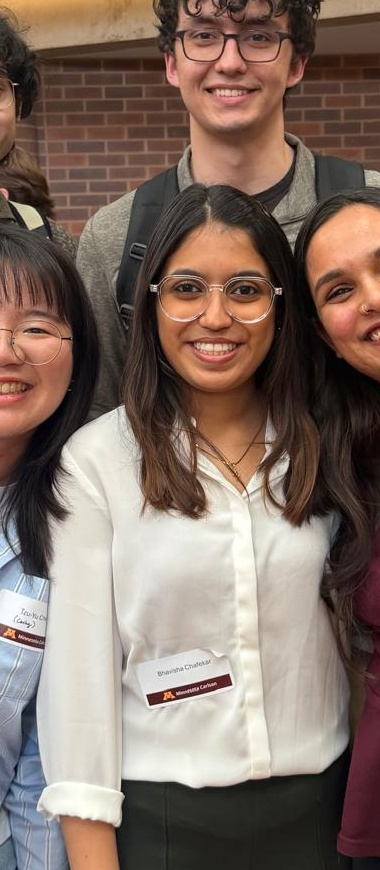

InsideInsight
Judges’ and Instructor’s Favorite at Carlson.
I enjoy finding the story inside the numbers, shaping insights into action, and bringing a thoughtful, people-first lens to every problem I solve.


I work best with people who ask thoughtful questions, challenge assumptions, and care about getting the answer right. I bring structure to ambiguity, make the business story easy to follow, and keep the team focused on the decision that matters.
Whether I am analyzing data, facilitating a conversation, or presenting a recommendation, I care about clarity, empathy, and practical impact.
Judges’ and Instructor’s Favorite at Carlson.

Runner-up for a transportation reliability analysis.

University of Minnesota, Carlson School of Management.

The people who keep me grounded and ambitious.

Building, testing, presenting, and learning together.
InsideInsight at Carlson
Carlson Spring 2026 Live Case
Applied AI and computer vision
FSCN 1011, Science of Food & Cooking
Client work, financial analytics, applied research, and teaching experience.
Converted client data into decision-ready recommendations through transportation reliability, bid performance, pricing, and operational analysis.
Supported students in Science of Food & Cooking labs, clarified technical concepts, guided activities, and helped create an organized and encouraging learning environment.
Supported recurring reporting and decision support for financial institutions through SQL extraction, reconciliation, Power BI dashboards, Excel analysis, and root-cause investigation.
Analyzed sustainability communication across BSE-100 companies using NLP, disclosure data, and structured validation to surface themes and reporting patterns.
Browse projects, competitions, and research separately, then open each item for the full story.

Built an Airbnb pricing intelligence product using Spark, Databricks, Streamlit, and a LangGraph workflow.
Created a weighted confidence model to validate GPS-based route execution and identify vendor-level reliability risks.
Synthesized bid records to surface pricing gaps, regional hotspots, seasonal patterns, and roadmap priorities.
Developed a six-model ensemble and translated predictive performance into a retention strategy.

Modeled an emissions-reduction framework and AI-driven behavioral nudges for corporate travel.
Designed a multilingual document-intelligence product for cross-border trade workflows.
Designed an NLP ticket-routing solution and operational dashboards for faster issue resolution.
Investigated whether high Medicare spending was driven more by care intensity or visit frequency.
Developed a multimodal medical imaging framework and published a labeled OCT-Fundus dataset.
Applied deep learning methods to multi-class lung cancer classification from medical imaging data.
Proposed a hybrid VGG16-CNN approach for improving fracture detection on X-ray datasets.
Filed a patent for a dual-authentication, contactless attendance system using computer vision.
Tools and methods selected to serve the decision, not to impress the dashboard.
Data preparation, KPI design, statistical testing, visualization, and executive reporting.
Data pipelines, predictive modeling, NLP, agentic workflows, and practical AI product design.
Structured thinking, stakeholder alignment, impact sizing, and recommendation development.
University of Minnesota, Carlson School of Management
Sardar Patel Institute of Technology


I am interested in full-time opportunities across business analytics, data analytics, strategy, decision support, and AI-enabled operations.